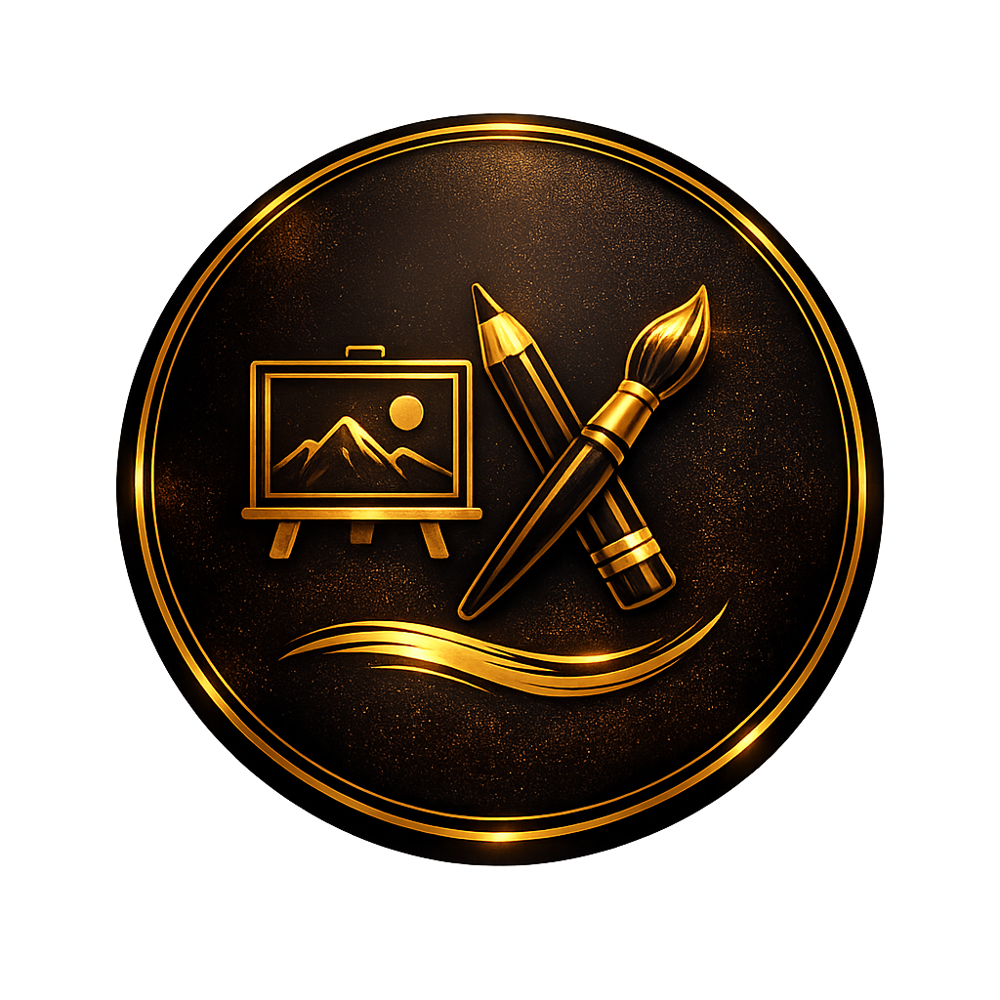

글과 이미지, 영상을 넘나들며
제 이야기를 만들어가는 사람입니다.

입시 미술로 창작의 첫걸음을 뗀 뒤, 국어국문창작학을 전공하며 시·소설·영화 및 방송 시나리오 등 다양한 장르의 글쓰기를 폭넓게 익혔습니다. 대학 시절 영상 제작 동아리에서는 소품 제작과 연출, 시나리오 작업은 물론 영상 촬영과 편집까지 두루 경험했으며, 완성한 작품을 유튜브에 업로드하고 학술제에서 상영하는 등 창작물을 실제로 세상에 선보이는 과정도 직접 경험했습니다.
현재는 AIX 수업을 통해 창작과 기술의 접점을 탐구하고 있으며, 궁극적인 목표는 저만의 창작물을 완성해 세상에 선보이는 것입니다. 이와 함께 그림과 사진을 기록하는 인스타그램 계정을 운영하며 꾸준히 창작 활동을 이어가고 있습니다.
다양한 장르를 넘나든 경험을 바탕으로, 이제는 하나의 명확한 색깔을 지닌 AI 콘텐츠 크리에이터로 자리매김하고자 합니다.